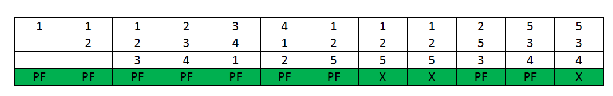

Belady's Anomaly
Bélády’s anomaly is the name given to the phenomenon where increasing the number of page frames results in an increase in the number of page faults for a given memory access pattern.
This phenomenon is commonly experienced in following page replacement algorithms:
First in first out (FIFO)
Second chance algorithm
Random page replacement algorithm
The other two commonly used page replacement algorithms are Optimal and LRU, but Belady’s Anamoly can never occur in these algorithms for any reference string as they belong to a class of stack based page replacement algorithms.
Example:-
Assuming a system that has no pages loaded in the memory and uses the FIFO Page replacement algorithm. Consider the following reference string:
String:- 1 2 3 4 1 2 5 1 2 3 4 5
Case 1:- No. of frames = 3

Using FIFO page replacement algorithm yields a total of 9 page faults. The diagram below illustrates the pattern of the page faults occurring in the example.
Case 2:- No. of frames = 4

the given reference string on using FIFO page replacement algorithm yields a total of 10 page faults. The diagram below illustrates the pattern of the page faults occurring in the example.